marlin is an R package for running spatially explicit simulations of marine fauna and fisheries. It tracks the age-structured populations of multiple species targeted by multiple fishing fleets across a two-dimensional grid, and supports a wide range of life histories, movement dynamics, fleet behaviours, and management strategies. See the examples below and the vignettes under the Articles tab for worked demonstrations of how to:
- simulate the displacement of fishing effort across multiple species
- model seasonal spawning aggregations or climate-driven range shifts
- explore the role of port distance in shaping fleet spatial dynamics
- generate spatially explicit data for stock assessment model testing
The model is described in the following papers:
Ovando, D., Bradley, D., Burns, E., Thomas, L., & Thorson, J. (2023). Simulating benefits, costs and trade-offs of spatial management in marine social-ecological systems. Fish and Fisheries. https://doi.org/10.1111/faf.12804
Ovando, D. (2025). Predicted effects of marine protected areas on conservation and catches are sensitive to model structure. Theoretical Ecology, 18(1), 7. https://doi.org/10.1007/s12080-024-00602-7
See Getting Started with marlin for examples of how to get started with marlin.
What is marlin for?
marlin is best suited to asking what if questions rather than what will questions.
For example, marlin is well-suited to “how might the impacts of a proposed MPA network change if fishing effort is displaced rather than removed?” It is not designed to answer “what will the exact biodiversity impacts of this specific MPA be down to the sixth decimal place?”
This distinction matters because marlin is a structural rather than statistical simulation model: its parameters are not estimated by fitting to observed data. Instead, users set parameters to reflect the general dynamics of the system they are studying. This makes marlin well-suited to sensitivity analysis and scenario comparison, but less suited to precise, site-specific prediction.
The simpler and more comparative the question, the easier it is to use marlin well. “How sensitive are MPA outcomes to hyperallometry?” is a much more tractable question than “what will catch and biodiversity look like under a proposed MPA for 17 data-limited species in a rapidly changing coastal bay?” Both are feasible, but the latter demands much more careful parameterisation.
Some intended use cases:
- Assessing sensitivity of MPA network designs to ecological and economic uncertainty
- Designing dynamic ocean management strategies under climate change
- Management strategy evaluation for spatially explicit fisheries management
Installation
You can install the development version from GitHub with:
# install.packages("devtools")
devtools::install_github("DanOvando/marlin")Installation troubleshooting
- Start with a fresh R session (Session > Restart R) before attempting the install.
- R version 4.1 or higher is required.
- If you encounter an error, try updating all installed packages first, then retry.
-
marlinrequires R compiler tools:- Windows: install the appropriate version of Rtools for your R version (e.g. Rtools44 for R 4.4). When prompted, check the box to add Rtools to the PATH.
- macOS: use the macrtools package or follow the official CRAN instructions.
- After installing compiler tools, restart R and try again.
A note on complexity and expectations
marlin is designed to be fast and approachable given the complexity of what it models. That said, it is not a push-button tool for automated MPA design. Users need a working understanding of the model’s core behaviour, and results will depend on thoughtful parameterisation and solid R skills.
While marlin includes helpers for common outputs and plots, the raw simulation output is a deeply nested list spanning ages, time steps, patches, species, and fleet units simultaneously. Fluency with list manipulation will serve you well; purrr is particularly useful here.
The tidyverse is not required to run marlin, but the examples below make extensive use of dplyr, tidyr, ggplot2, and purrr to extract and visualise results.
Simple example
The following example walks through a minimal one-fleet, one-species simulation to introduce the core marlin workflow.
Key global parameters:
-
resolution: grid dimensions. A single integer creates a square grid (e.g.resolution = 10gives a 10×10 grid). A length-2 vectorc(nx, ny)creates a rectangular grid, soresolution = c(2, 10)gives a 2×10 grid. -
years: number of years to simulate. -
seasons: number of seasons per year.4gives a quarterly model,12a monthly model, etc. -
patch_area: area of each patch in km².
library(marlin)
library(tidyverse)
options(dplyr.summarise.inform = FALSE)
theme_set(marlin::theme_marlin(base_size = 14))
resolution <- c(5, 10)
patch_area <- 2
years <- 20
seasons <- 4
time_step <- 1 / seasons
steps <- years * seasonsmarlin is structured around three list objects:
-
fauna: life histories of the species being simulated -
fleets: fleet dynamics and fishing behaviour -
manager: management strategies (MPAs, quotas, effort caps)
A note on FishLife default values
Each species in fauna is created with create_critter. If you supply a common or scientific name, the function attempts to populate life history parameters from FishLife. This requires an internet connection; running marlin offline requires supplying all life history values manually.
Important: FishLife values are model estimates, not direct measurements. Always verify that the retrieved values are appropriate for your application, and update them with local data where possible.
After calling create_critter, check the closest_taxa_match field on the returned object to confirm that FishLife matched the intended taxon. We recommend using scientific_name rather than common_name. If you see an error like Error in seq.default(min_age, max_age, by = time_step), this is typically a network connectivity issue — simply re-running the code usually resolves it.
Creating a basic simulation
We start by building a fauna object using create_critter. Most arguments are straightforward life history parameters. Two worth highlighting: adult_home_range and recruit_home_range specify the linear distance (in km) within which 95% of adults or recruits, respectively, are expected to disperse from a source patch over the course of a year.
fauna <-
list(
"bigeye" = create_critter(
common_name = "bigeye tuna",
adult_home_range = 5,
recruit_home_range = 15,
density_dependence = "local_habitat",
seasons = seasons,
depletion = .25,
resolution = resolution,
patch_area = patch_area,
steepness = 0.6,
ssb0 = 42,
m = 0.4
)
)
fauna$bigeye$plot()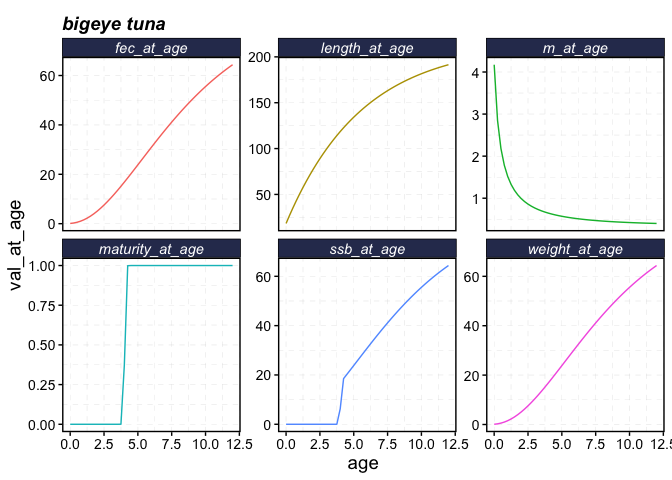
fauna$bigeye$plot_movement()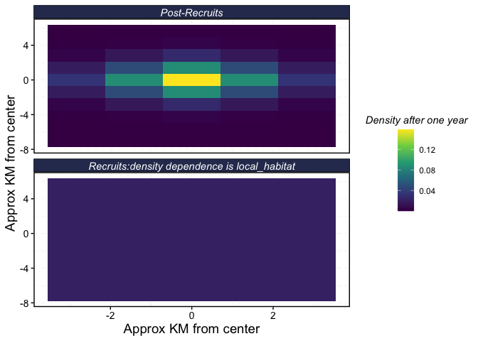
The fleets object is a list of fishing fleets, each created with create_fleet. Every fleet contains one metier per species, specifying that fleet’s interaction with a given critter: price per unit weight, selectivity, and exploitation share. The p_explt argument controls the share of total fishing mortality for each species attributed to that metier — values are relative, not absolute. If two metiers have p_explt = 1 and p_explt = 2 for species X, the first accounts for one-third of total mortality and the second for two-thirds.
fleets <- list(
"longline" = create_fleet(
list("bigeye" = Metier$new(
critter = fauna$bigeye,
price = 10,
sel_form = "logistic",
sel_start = 1,
sel_delta = .01,
catchability = 0,
p_explt = 1,
)),
base_effort = prod(resolution),
resolution = resolution
)
)
fleets$longline$metiers$bigeye$plot_selectivity()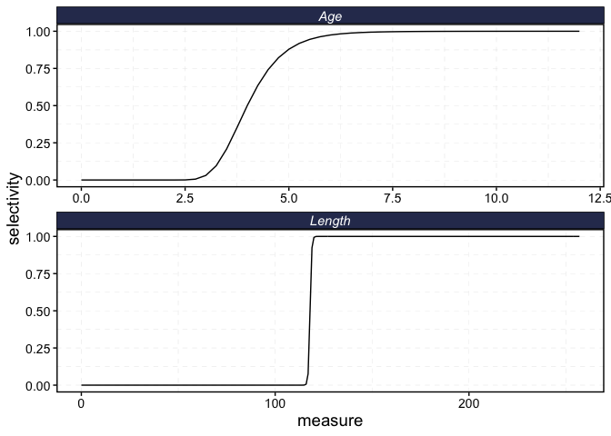
tune_fleets calibrates catchability coefficients so that each fleet achieves a specified equilibrium depletion level. Here the target is 25% depletion, meaning fished biomass equals 25% of unfished biomass at equilibrium. The calibration accounts for all fleet dynamics and p_explt weights.
fleets <- tune_fleets(fauna, fleets, tune_type = "explt")
fleets$longline$metiers$bigeye$plot_catchability()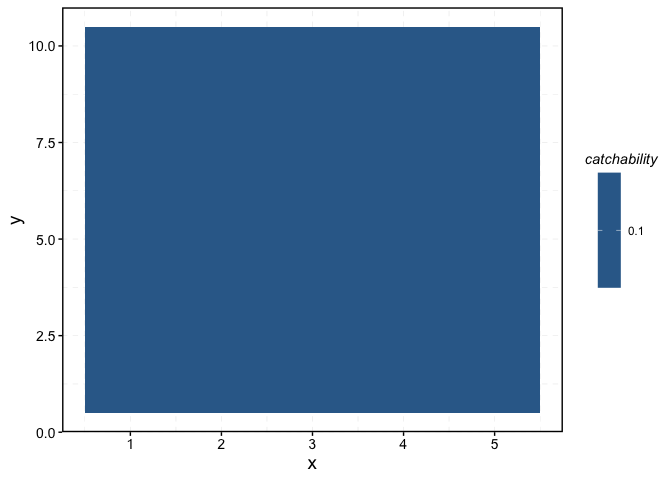
With fauna and fleets defined, we pass them to simmar to run the simulation:
start_time <- Sys.time()
example_sim <- simmar(
fauna = fauna,
fleets = fleets,
years = years
)
Sys.time() - start_time
#> Time difference of 0.0580442 secsprocess_marlin tidies the raw simulation output into data frames; plot_marlin provides quick visualisations:
# options(warn = 2)
processed_marlin <- process_marlin(sim = example_sim, time_step = time_step)
plot_marlin(processed_marlin)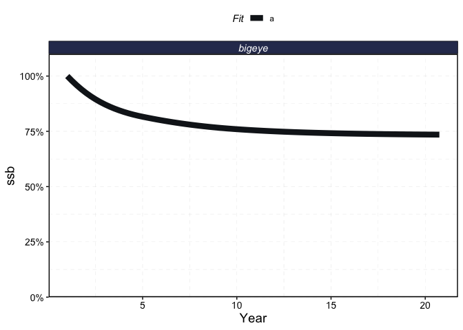
plot_marlin(processed_marlin, plot_var = "c", max_scale = FALSE)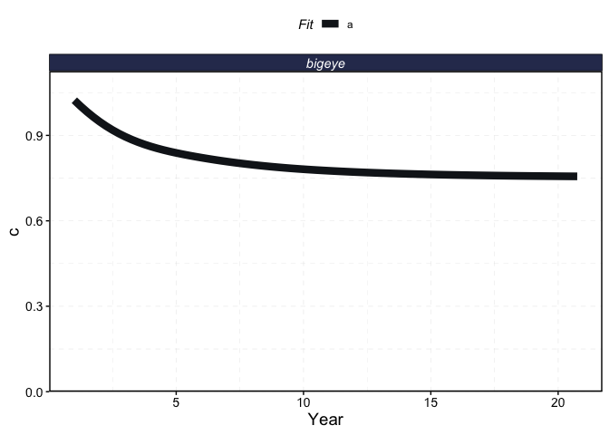
plot_marlin(processed_marlin, plot_var = "n", plot_type = "length", fauna = fauna)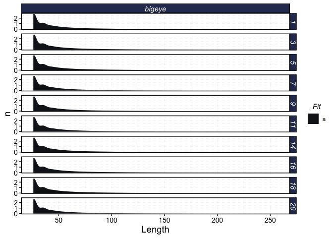
plot_marlin(processed_marlin, plot_var = "ssb", plot_type = "space", steps_to_plot = max(processed_marlin$fauna$step))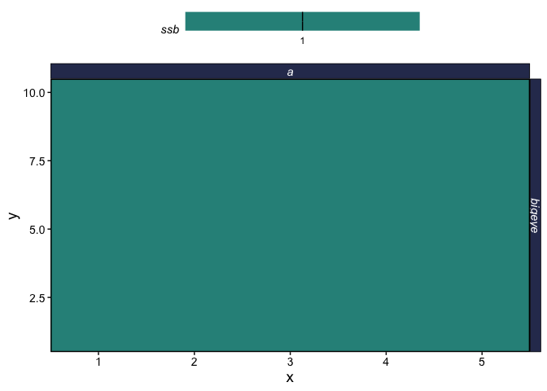
Two species, two fleets, with seasonal habitat shifts
This example extends the simulation to two species and two fleets, adding seasonal habitat dynamics where each species occupies a different spatial distribution depending on the time of year.
seasons <- 4
steps <- years * seasons
time_step <- 1 / seasons
skipjack_home_range <- 2
bigeye_home_range <- 5
# Construct habitat quality surfaces as [ny, nx] matrices
skipjack_habitat <- expand_grid(x = 1:resolution[1], y = 1:resolution[2]) %>%
dplyr::mutate(
habitat = dnorm((x^2 + y^2), 20, 200),
habitat = habitat / max(habitat) * skipjack_home_range
) |>
pivot_wider(names_from = x, values_from = habitat) %>%
select(-y) %>%
as.matrix()
bigeye_habitat <- expand_grid(x = 1:resolution[1], y = 1:resolution[2]) %>%
mutate(
habitat = dnorm((x^2 + y^2), 300, 100),
habitat = habitat / max(habitat) * bigeye_home_range
) %>%
pivot_wider(names_from = x, values_from = habitat) %>%
select(-y) %>%
as.matrix()
bigeye_habitat2 <- expand_grid(x = 1:resolution[1], y = 1:resolution[2]) %>%
mutate(
habitat = dnorm((x^.2 + y^.2), 100, 100),
habitat = habitat / max(habitat) * bigeye_home_range
) %>%
pivot_wider(names_from = x, values_from = habitat) %>%
select(-y) %>%
as.matrix()
a <- Sys.time()
fauna <-
list(
"skipjack" = create_critter(
scientific_name = "Katsuwonus pelamis",
habitat = list(skipjack_habitat, skipjack_habitat), # pass habitat as lists
season_blocks = list(c(1, 2), c(3, 4)), # seasons each habitat apply to
recruit_habitat = skipjack_habitat,
adult_home_range = skipjack_home_range, # standard deviation of the number of patches moved by adults
depletion = .6, # desired equilibrium depletion with fishing (1 = unfished, 0 = extinct),
density_dependence = "global_habitat", # recruitment form, where 1 implies local recruitment
seasons = seasons,
init_explt = 0.2,
explt_type = "f"
),
"bigeye" = create_critter(
common_name = "bigeye tuna",
habitat = list(bigeye_habitat, bigeye_habitat2), # pass habitat as lists
season_blocks = list(c(1, 2), c(3, 4)), # seasons each habitat apply to
recruit_habitat = bigeye_habitat,
adult_home_range = bigeye_home_range,
depletion = .1,
density_dependence = "local_habitat",
seasons = seasons,
init_explt = 0.3,
explt_type = "f"
)
)
Sys.time() - a
#> Time difference of 1.783448 secs
# Each fleet contains one metier per species.
# price = price per unit weight; sel_form = "logistic" or "dome"
fauna$skipjack$plot_movement()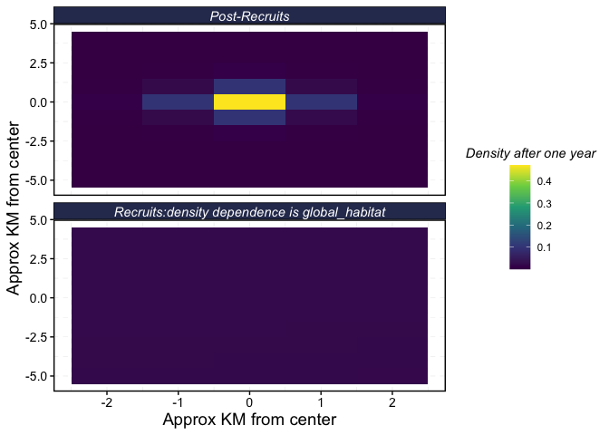
fauna$bigeye$plot_movement()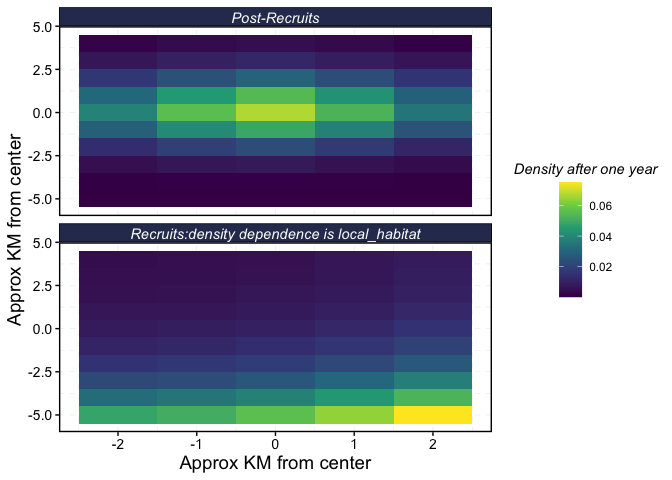
fleets <- list(
"longline" = create_fleet(
list(
"skipjack" = Metier$new(
critter = fauna$skipjack,
price = 100,
# price per unit weight
sel_form = "logistic",
# selectivity form, one of logistic or dome
sel_start = .3,
# percentage of length at maturity that selectivity starts
sel_delta = .1,
# additional percentage of sel_start where selectivity asymptotes
catchability = .01,
# overwritten by tune_fleet but can be set manually here
p_explt = 1
),
"bigeye" = Metier$new(
critter = fauna$bigeye,
price = 10,
sel_form = "logistic",
sel_start = .1,
sel_delta = .01,
catchability = 0,
p_explt = 1
)
),
base_effort = prod(resolution),
resolution = resolution
),
"purseseine" = create_fleet(
list(
skipjack = Metier$new(
critter = fauna$skipjack,
price = 100,
sel_form = "logistic",
sel_start = 0.25,
sel_delta = .1,
catchability = .01,
p_explt = 0.9
),
bigeye = Metier$new(
critter = fauna$bigeye,
price = 100,
sel_form = "logistic",
sel_start = .25,
sel_delta = .5,
catchability = .01,
p_explt = 1
)
),
base_effort = prod(resolution), resolution = resolution
)
)
a <- Sys.time()
fleets <- tune_fleets(fauna, fleets)
Sys.time() - a
#> Time difference of 0.22399 secs
# Run the simulation
a <- Sys.time()
sim3 <- simmar(
fauna = fauna,
fleets = fleets,
years = years
)
Sys.time() - a
#> Time difference of 0.09776616 secs
# a <- Sys.time()
processed_marlin <- process_marlin(sim = sim3, time_step = time_step, keep_age = TRUE)
# Sys.time() - a
plot_marlin(processed_marlin)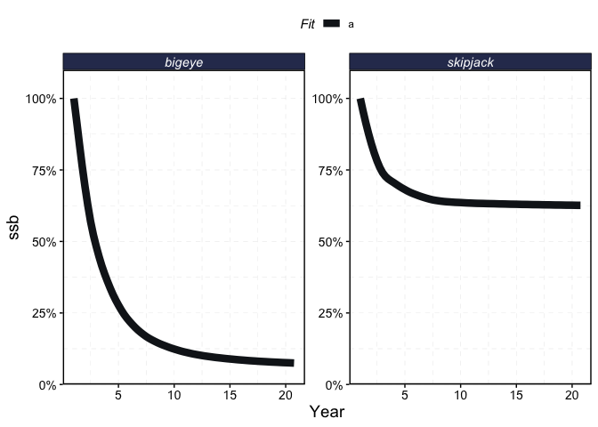
plot_marlin(processed_marlin, plot_var = "c")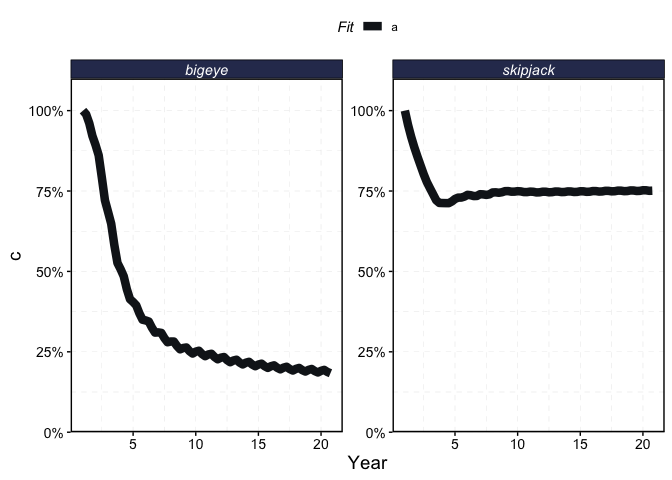
plot_marlin(processed_marlin, plot_var = "n", plot_type = "length", fauna = fauna)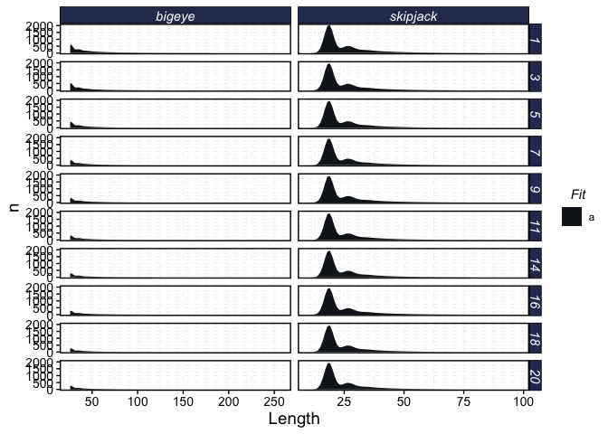
Evaluating MPAs
This example compares the effect of an identical MPA on two species — yellowfin tuna and shortfin mako shark — under two spatial configurations. In the first scenario both species share nearshore (eastern) habitat. In the second, the tuna remain nearshore but the mako population is centred further offshore. The MPA is designed around tuna distribution in both cases, illustrating how a bycatch species’ unobserved range shift can determine whether an MPA helps or harms that species.
resolution <- c(20, 20) # resolution is in squared patches, so 20 implies a 20X20 system, i.e. 400 patches
seasons <- 1
years <- 100
tune_type <- "depletion"
steps <- years * seasons
yft_home_range <- 6
yft_depletion <- 0.6
mako_depletion <- 0.2
mako_home_range <- 5
yft_b0 <- 10000
mako_b0 <- 420
# Both species share the same nearshore (high-x) habitat in this first scenario
yft_habitat <- expand_grid(x = 1:resolution[1], y = 1:resolution[2]) %>%
mutate(
habitat = dnorm(x, resolution, 8),
habitat = habitat / max(habitat) * yft_home_range
) %>%
pivot_wider(names_from = x, values_from = habitat) %>%
select(-y) %>%
as.matrix()
mako_habitat <- expand_grid(x = 1:resolution[1], y = 1:resolution[2]) %>%
mutate(
habitat = dnorm(x, resolution, 8),
habitat = habitat / max(habitat) * mako_home_range
) %>%
pivot_wider(names_from = x, values_from = habitat) %>%
select(-y) %>%
as.matrix()
# Nearshore scenario: both species concentrated toward the eastern edge
fauna <-
list(
"Yellowfin Tuna" = create_critter(
scientific_name = "Thunnus albacares",
habitat = yft_habitat, # pass habitat as lists
recruit_habitat = yft_habitat,
adult_home_range = yft_home_range, # cells per year
depletion = yft_depletion, # desired equilibrium depletion with fishing (1 = unfished, 0 = extinct),
density_dependence = "global_habitat", # recruitment form, where 1 implies local recruitment
seasons = seasons,
b0 = yft_b0
),
"Shortfin Mako" = create_critter(
scientific_name = "Isurus oxyrinchus",
habitat = list(mako_habitat), # pass habitat as lists
recruit_habitat = mako_habitat,
adult_home_range = mako_home_range,
depletion = mako_depletion,
density_dependence = "global_habitat", # recruitment form, where 1 implies local recruitment
burn_years = 200,
seasons = seasons,
fec_form = "pups",
pups = 6,
b0 = mako_b0,
lorenzen_m = TRUE,
lorenzen_c = -0.25
)
)
fauna$`Shortfin Mako`$plot()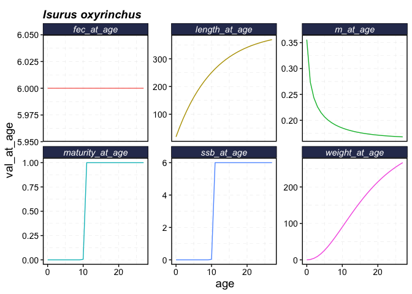
fleets <- list("longline" = create_fleet(
list(
`Yellowfin Tuna` = Metier$new(
critter = fauna$`Yellowfin Tuna`,
price = 100, # price per unit weight
sel_form = "logistic", # selectivity form, one of logistic or dome
sel_start = .3, # percentage of length at maturity that selectivity starts
sel_delta = .1, # additional percentage of sel_start where selectivity asymptotes
catchability = .01, # overwritten by tune_fleet but can be set manually here
p_explt = 1
),
`Shortfin Mako` = Metier$new(
critter = fauna$`Shortfin Mako`,
price = 10,
sel_form = "logistic",
sel_start = .1,
sel_delta = .01,
catchability = 0,
p_explt = 1
)
),
mpa_response = "stay",
base_effort = prod(resolution),
resolution = resolution,
spatial_allocation = "rpue",
cost_per_unit_effort = 1,
effort_cost_exponent = 1.3
))
a <- Sys.time()
# before <- fleets$longline$metiers$`Yellowfin Tuna`$catchability
#
# fleets$longline$metiers$`Yellowfin Tuna`$spatial_catchability
fleets <- tune_fleets(fauna, fleets, tune_type = tune_type, tune_costs = TRUE,years = floor(years * .5)) # tunes the catchability by fleet to achieve target depletion
# fleets$longline$base_effort
# after = fleets$longline$metiers$`Yellowfin Tuna`$catchability
# fleets$longline$metiers[[1]]$catchability
# fleets$longline$metiers[[1]]$catchability
# fleets$longline$metiers[[2]]$catchability
# new_fleets$longline$base_effort
# before == after
# fleets$longline$metiers$`Yellowfin Tuna`$spatial_catchability
Sys.time() - a
#> Time difference of 1.901096 secs
# Run the nearshore baseline (no MPA)
a <- Sys.time()
nearshore <- simmar(
fauna = fauna,
fleets = fleets,
years = years
)
Sys.time() - a
#> Time difference of 0.2496009 secs
proc_nearshore <- process_marlin(nearshore, time_step = fauna[[1]]$time_step)
plot_marlin(proc_nearshore, max_scale = FALSE, plot_var = "b")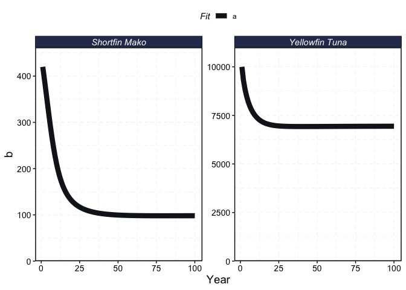
plot_marlin(proc_nearshore, max_scale = FALSE, plot_var = "ssb")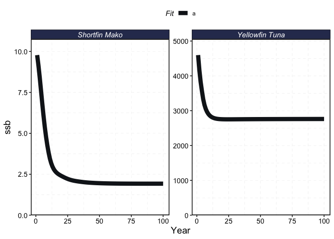
We define the MPA as a data frame with columns x, y, and mpa, where mpa = TRUE marks closed patches:
set.seed(42)
# specify some MPA locations
mpa_locations <- expand_grid(x = 1:resolution[1], y = 1:resolution[2]) %>%
mutate(mpa = x > 15 & y < 15)
mpa_locations %>%
ggplot(aes(x, y, fill = mpa)) +
geom_tile() +
scale_fill_brewer(palette = "Accent", direction = -1, name = "MPA") +
scale_x_continuous(name = "Lon") +
scale_y_continuous(name = "Lat")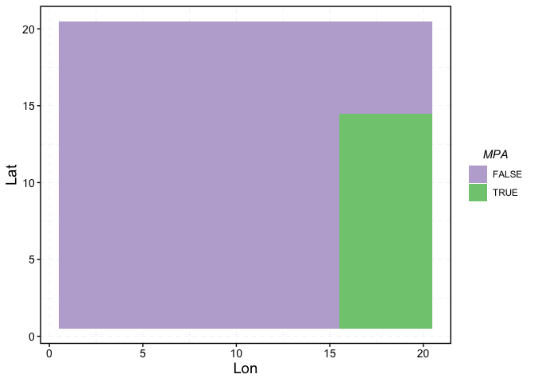
We simulate the MPA by passing it to simmar via the manager argument. mpa_year controls when the closure is activated:
a <- Sys.time()
nearshore_mpa <- simmar(
fauna = fauna,
fleets = fleets,
years = years,
manager = list(mpas = list(
locations = mpa_locations,
mpa_year = floor(years * .5)
))
)
Sys.time() - a
#> Time difference of 0.366024 secs
proc_nearshore_mpa <- process_marlin(nearshore_mpa, time_step = fauna[[1]]$time_step)
plot_marlin(proc_nearshore_mpa, max_scale = FALSE)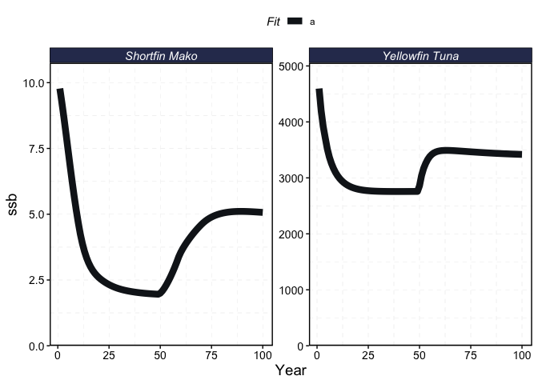
Now we run the offshore scenario: tuna habitat is unchanged, but the mako population has shifted further offshore. We apply the exact same MPA and compare outcomes.
mako_habitat <- expand_grid(x = 1:resolution[1], y = 1:resolution[2]) %>%
mutate(
habitat = dnorm(x, .7 * resolution, 6),
habitat = habitat / max(habitat) * mako_home_range
) %>%
pivot_wider(names_from = x, values_from = habitat) %>%
select(-y) %>%
as.matrix()
# Offshore scenario: same tuna habitat, mako now centred further from shore
fauna <-
list(
"Yellowfin Tuna" = create_critter(
scientific_name = "Thunnus albacares",
habitat = yft_habitat, # pass habitat as lists
recruit_habitat = yft_habitat,
adult_home_range = yft_home_range, # cells per year
depletion = yft_depletion, # desired equilibrium depletion with fishing (1 = unfished, 0 = extinct),
density_dependence = "global_habitat", # recruitment form, where 1 implies local recruitment
seasons = seasons,
b0 = yft_b0
),
"Shortfin Mako" = create_critter(
scientific_name = "Isurus oxyrinchus",
habitat = list(mako_habitat), # pass habitat as lists
recruit_habitat = mako_habitat,
adult_home_range = mako_home_range,
depletion = mako_depletion,
density_dependence = "global_habitat", # recruitment form, where 1 implies local recruitment
burn_years = 200,
seasons = seasons,
fec_form = "pups",
pups = 6,
b0 = mako_b0,
lorenzen_m = TRUE,
lorenzen_c = -0.25
)
)
fauna$`Shortfin Mako`$plot()
fleets$longline$metiers$`Shortfin Mako`$catchability
#> longline
#> 0.05342734
new_fleets <- tune_fleets(fauna, fleets, tune_type = tune_type,tune_costs = FALSE, years = floor(years * .5)) # tunes the catchability by fleet to achieve target depletion
new_fleets$longline$metiers$`Shortfin Mako`$catchability
#> longline
#> 0.3206818
new_fleets$longline$metiers$`Yellowfin Tuna`$catchability
#> longline
#> 0.09775678
# Run the offshore baseline (no MPA)
a <- Sys.time()
offshore <- simmar(
fauna = fauna,
fleets = new_fleets,
years = years
)
Sys.time() - a
#> Time difference of 0.2487822 secs
proc_offshore <- process_marlin(offshore, time_step = fauna[[1]]$time_step)
a <- Sys.time()
offshore_mpa_sim <- simmar(
fauna = fauna,
fleets = new_fleets,
years = years,
manager = list(mpas = list(
locations = mpa_locations,
mpa_year = floor(years * .5)
))
)
Sys.time() - a
#> Time difference of 0.53953 secs
proc_offshore_mpa <- process_marlin(offshore_mpa_sim, time_step = fauna[[1]]$time_step)
plot_marlin(proc_offshore)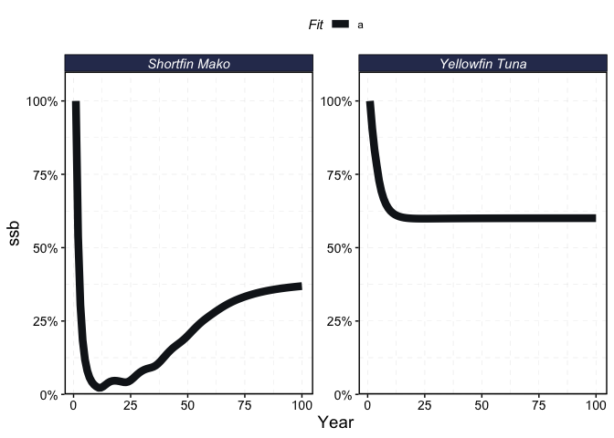
plot_marlin(proc_offshore_mpa)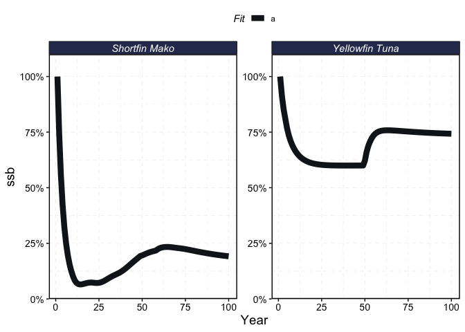
Effects of nearshore MPAs when sharks live nearshore
plot_marlin(
`No MPA: Sharks Nearshore` = proc_nearshore,
`MPA: Sharks Nearshore` = proc_nearshore_mpa,
steps_to_plot = NA,
plot_var = "ssb",
max_scale = FALSE
)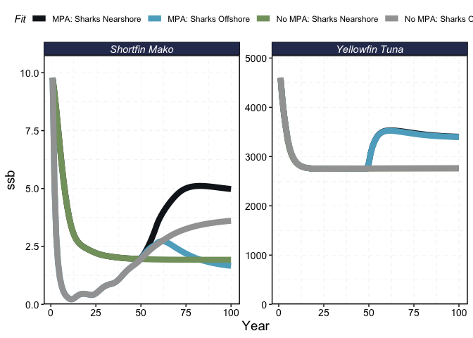
Effects of nearshore MPAs when sharks live offshore
plot_marlin(
`MPA: Sharks Offshore` = proc_offshore_mpa,
`No MPA: Sharks Offshoe` = proc_offshore,
steps_to_plot = NA,
plot_var = "ssb",
max_scale = FALSE
)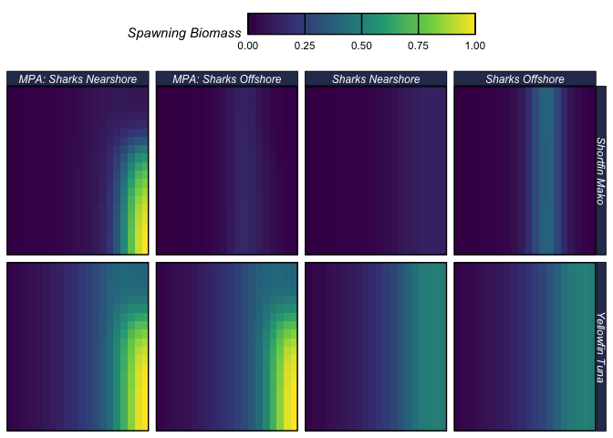
plot_marlin(
`MPA: Sharks Offshore` = proc_offshore_mpa,
`Sharks Nearshore` = proc_nearshore,
`Sharks Offshore` = proc_offshore,
`MPA: Sharks Nearshore` = proc_nearshore_mpa,
plot_var = "ssb",
plot_type = "space",
steps_to_plot = c(years - 1)
) +
scale_fill_viridis_c(name = "Spawning Biomass", guide = guide_colorbar(barwidth = unit(13, "lines"), frame.colour = "black")) +
theme(
axis.text.x = element_blank(),
axis.text.y = element_blank(),
axis.title.x = element_blank(),
axis.title.y = element_blank(),
axis.ticks = element_blank(),
strip.text = element_text(size = 9)
)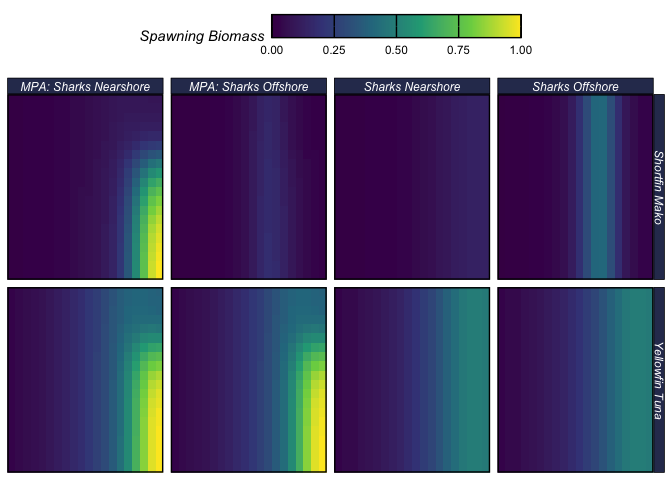
De facto MPAs through bycatch penalties
Fishing fleets can be deterred from areas without formal closures by making certain patches unprofitable. This example shows how assigning a large negative price to shortfin mako — representing bycatch liability or a regulatory penalty — causes the fleet to avoid mako habitat, effectively creating a de facto protected area.
years <- 100
tune_type <- "f"
# YFT habitat increases linearly with x (nearshore); mako is confined to the far corner (x>12, y>12)
yft_habitat <- expand_grid(x = 1:resolution[1], y = 1:resolution[2]) %>%
mutate(
habitat = .05 * x,
habitat = habitat / max(habitat) * yft_home_range
) %>%
pivot_wider(names_from = x, values_from = habitat) %>%
select(-y) %>%
as.matrix()
mako_habitat <- expand_grid(x = 1:resolution[1], y = 1:resolution[2]) %>%
mutate(
habitat = x > 12 & y > 12,
habitat = habitat / max(habitat) * mako_home_range
) %>%
pivot_wider(names_from = x, values_from = habitat) %>%
select(-y) %>%
as.matrix()
# Build fauna for the bycatch penalty scenario
fauna <-
list(
"Yellowfin Tuna" = create_critter(
scientific_name = "Thunnus albacares",
habitat = list(yft_habitat),
recruit_habitat = yft_habitat,
adult_home_range = yft_home_range,
depletion = .4,
density_dependence = "local_habitat", # recruitment form, where 1 implies local recruitment
seasons = seasons,
init_explt = 0.12,
explt_type = "f"
),
"Shortfin Mako" = create_critter(
scientific_name = "Isurus oxyrinchus",
habitat = list(mako_habitat),
recruit_habitat = mako_habitat,
adult_home_range = mako_home_range,
depletion = .3,
density_dependence = "local_habitat", # recruitment form, where 1 implies local recruitment
burn_years = 200,
seasons = seasons,
init_explt = 0.1,
explt_type = "f"
)
)
# A large negative mako price makes patches where mako is present unprofitable, deterring effort
fleets <- list("longline" = create_fleet(
list(
`Yellowfin Tuna` = Metier$new(
critter = fauna$`Yellowfin Tuna`,
price = 100, # price per unit weight
sel_form = "logistic", # selectivity form, one of logistic or dome
sel_start = .3, # percentage of length at maturity that selectivity starts
sel_delta = .1, # additional percentage of sel_start where selectivity asymptotes
catchability = .01, # overwritten by tune_fleet but can be set manually here
p_explt = 1
),
`Shortfin Mako` = Metier$new(
critter = fauna$`Shortfin Mako`,
price = -20000,
sel_form = "logistic",
sel_start = .1,
sel_delta = .01,
catchability = 0,
p_explt = 1
)
),
mpa_response = "stay",
base_effort = prod(resolution),
resolution = resolution
))
a <- Sys.time()
fleets <- tune_fleets(fauna, fleets, tune_type = tune_type) # tunes the catchability by fleet to achieve target depletion
Sys.time() - a
#> Time difference of 0.1790249 secs
# Run the simulation
negative_prices <- simmar(
fauna = fauna,
fleets = fleets,
years = years
)
proc_negative_prices <- process_marlin(negative_prices, time_step = fauna[[1]]$time_step)
plot_marlin(
`De-Facto MPA` = proc_negative_prices,
plot_var = "ssb",
plot_type = "space"
)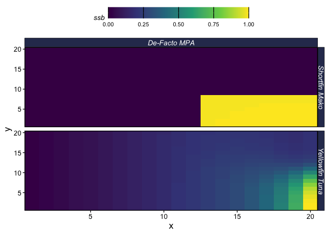